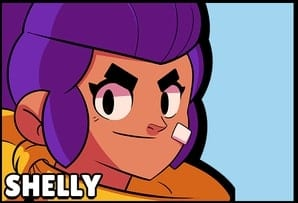
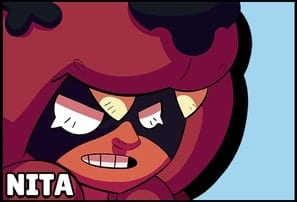
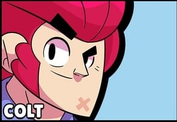
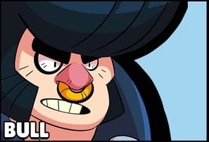
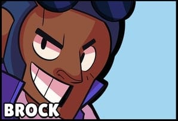

Toplamda 5 adet karakter vardır birinden başlayalım!
SHELLY NITA COLT BULL BROCK|  |
1- ShellyShelly isimli karakterimiz ranged bir karakter yani uzak mesafeden hasar verebiliyor.Atış yaptığında aynı anda 5 adet mermi fırlatıyor.Süper gücü ise daha etkili bir şekilde,pompalı tarzında atış yapmaktadır.Rakiplere fazla yaklaşmadan oynamak gerekir.
|
|  |
2- NitaNita isimli karakterimizde uzun mesafeden hasar verebilen bir karakterdir.Uzaktan oldukça güzel hasar verebilen bu karakterin süper gücü ise bir ayı çıkarmasıdır.Ayıyı özellikle defans yaparken çıkarmak oldukça işe yarayacaktır.
|
|  |
3- ColtColt isimli karakterimizde uzak mesafeden hasar vermektedir.Bir atışta sıralı bir şekilde 6 mermi yollamaktadır.Süper gücü ise mermi fırtınasıdır.Oldukça fazla bir şekilde bir alana hasar verir.
|
|  |
4- BullBull isimli karakterimiz ise kısa mesafeden hasar verir.Yani rakibe biraz yakın olması gerekir.Pompalı tarzında bir silahı vardır.Süper gücü ise buldozerdir.Koşarak hedefe çarpar ve hasar verir.Canı fazla olduğu için tank rolündedir.Ne kadar yakında olursa o kadar fazla hasar verir unutmayın.
|
|  |
5- BrockÇok uzak mesafeden hasar verebilmektedir.Oldukça fazla hasar veren bir yapısı vardır.Roket atmaktadır.Yalnız kaçmakta zorlanmaktadır.Süper gücü ise roket yağmurudur.Belli bir yere bir çok roket atmaktadır.
|